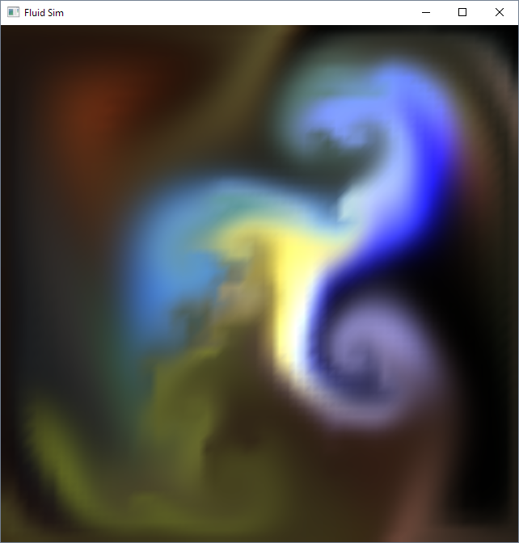
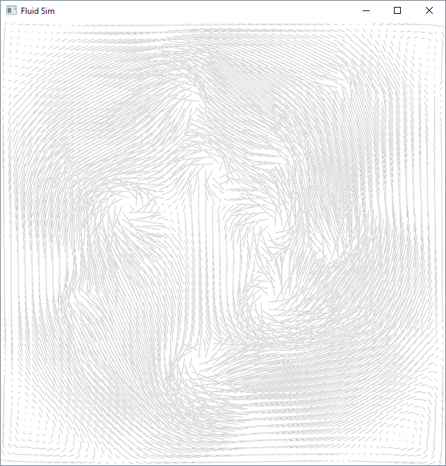
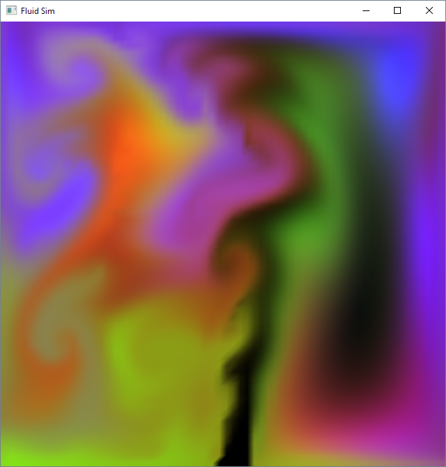
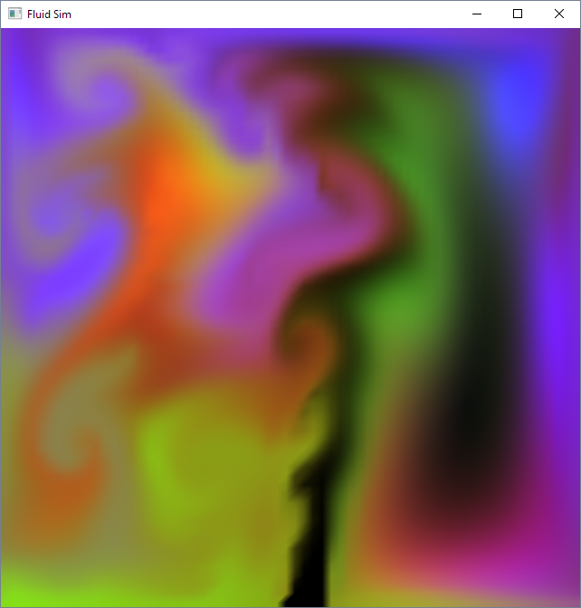

Fluid

Controls:
Left Click, Drag: Add ink
Right Click, Drag: Stir fluid
1-3: Red, Green, and Blue ink
F: Toggle "fan" that constantly blows fluid
C: Clear screen to black
4: Load picture into fluid
Concept:
This is a 2D fluid simulation wherein a user can stir RGB "ink" or "smoke" within a grid. Though the basic ingredients of this simulation make for a fairly compelling interaction, the visual quality of the fluid isn't quite realistic. There are a number of improvements that can be made. This project implements one such improvement using vorticity confinement to preserve vortex energy.
Credits:
Processing.org
Paper Referenced: "Visual Simulation of Smoke"


